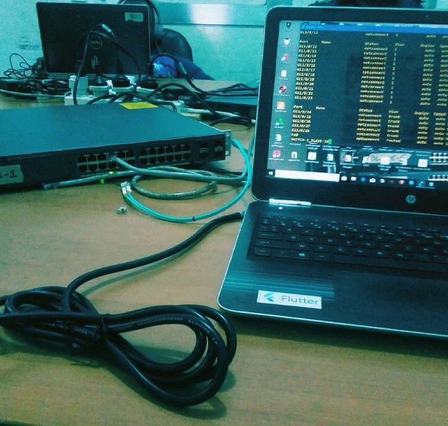
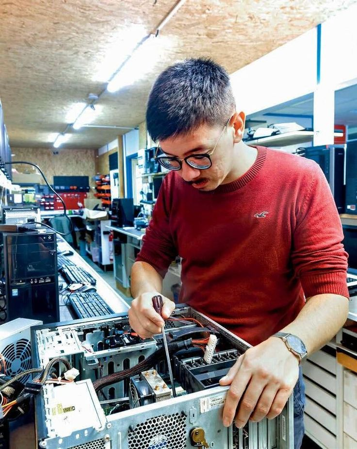

Nous organisons une formation d'apprentissage dans les différents domaines informatiques notamment:
Domaine de réseau informatique:le réseau informatique est un domaine qui prime ce dernier dans les entreprises et établissements publics tout comme privés. il vise à automaiser la communication entre les personnes distantes.
Elle facilite aussi l'information en distance, sur l'actualité et simplifie la recherche scientifique. pour notre formation, nous sommes basés sur: l'installation et configuration de: routeur, réseau LAN,MAN, entenne Vsat, pilonne
Domaine de la conception et programmation des sytèmes d'information, elle permet de mettre en place les logiciels ouprogiciels permettant la gestion d'une activité au sein d'une entité. Elle est catégorisée en trois:développement pour les applications desktop,mobile et web en utilisant les IDE et langage du développement approprié.

Dans le domaine de la maintenance informatique: cette dernière permet de prévenir, de réparer et de faire évoluer tous systèmes informatique. Elle se divise en deux branches qui sont : la maintenance matérielle et la maintenance logicielle.

Domaine de la bureatique: la bureautique est l'une de branche et metier informatique qui consiste à l'utilisation des logiciels ou progiciels conçus. Elle est un domaine rependu dans les différents services et bureaux. Elle n'est pas formcement demandée d'être toujours du domaine pour l'utiliser.
Pour découvrir les informations spécifiques de votre choix, veuillez cliquer sur le bouton ci-dessous